Data Visualizations Output
Total Number of Rows in each Dataset:
-
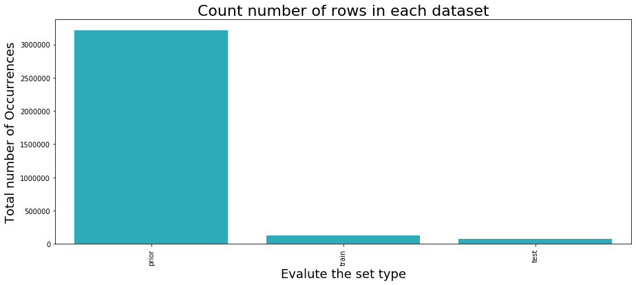
Maximum Number of Orders Occurrence:
-
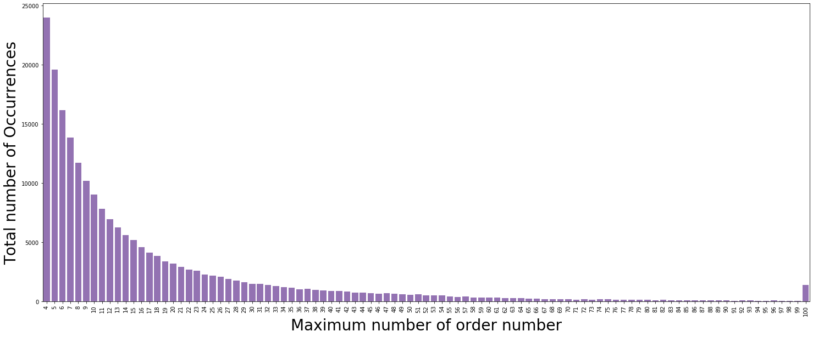
Total Numbers of Orders done in a particular Day of a Week:
-
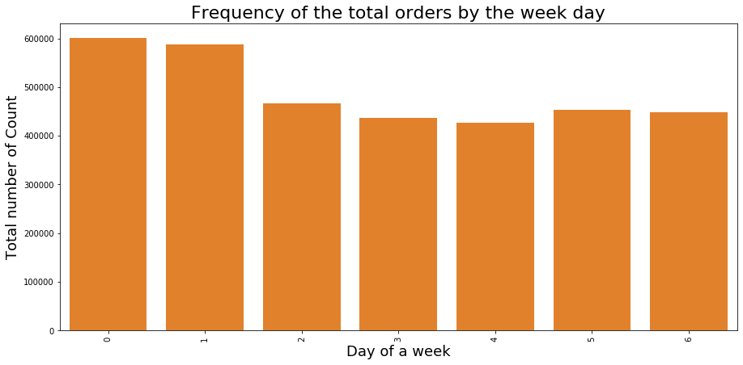
Total Numbers of Orders done in a particular Hour of a Day:
-
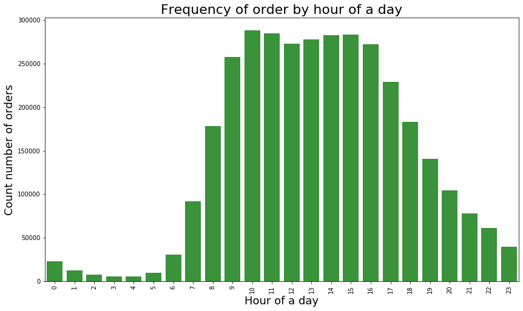
Total Numbers of Orders done in a particular Day of Week against Hour of a Day:
-
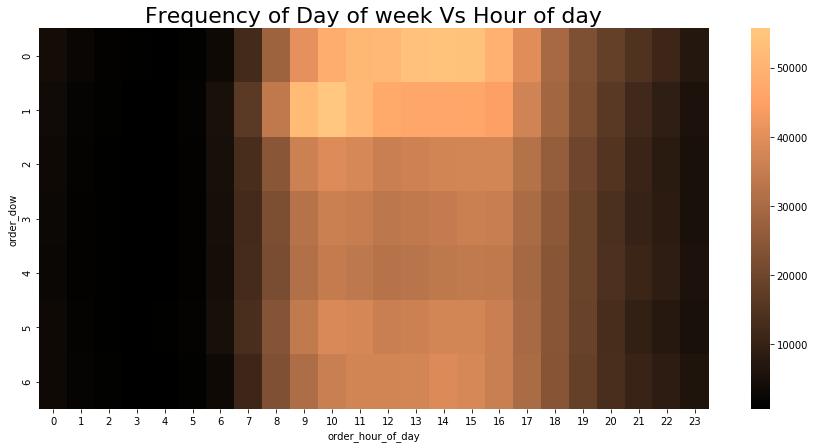
Total numbers of done in 30 days in Days Since Prior Order:
-
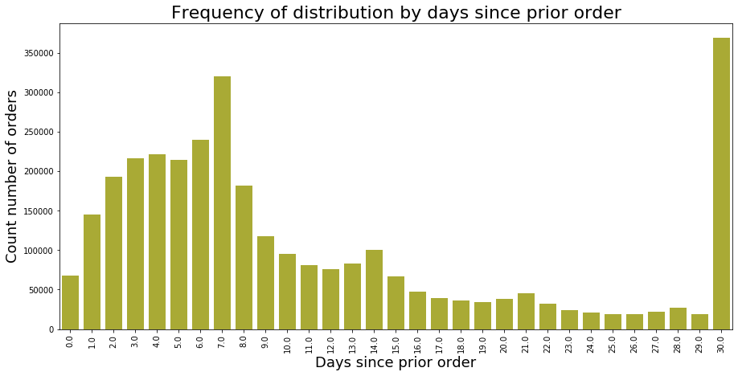
Distribution of products in the given Order:
-
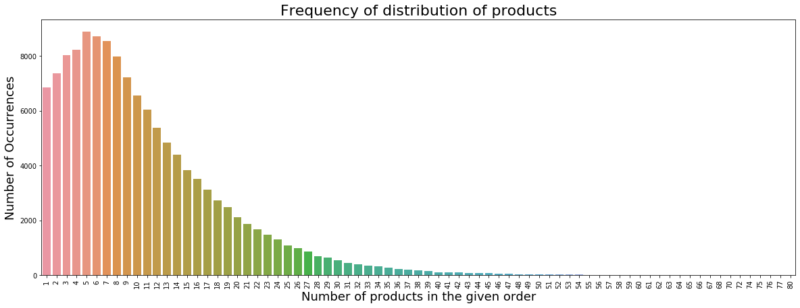
Products Distribution in Aisle datasets:
-
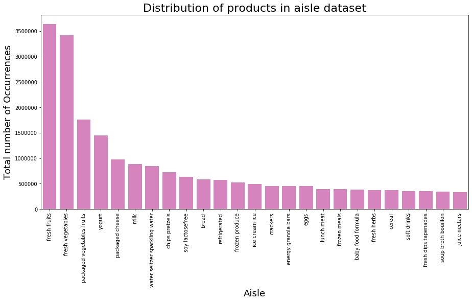
Distribution of products in each Departments:
-
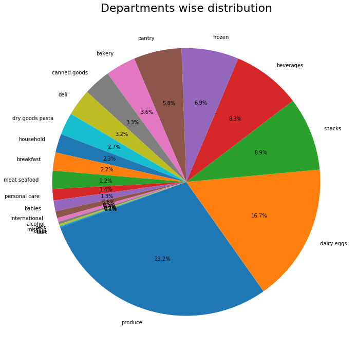
Departments wise Reorder Ratio of the particular products:
-
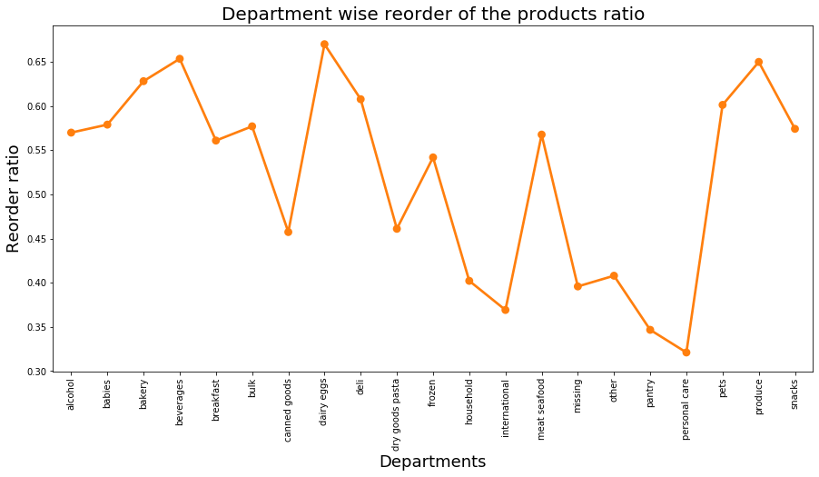
Products add to cart that products Reorder Ratio:
-
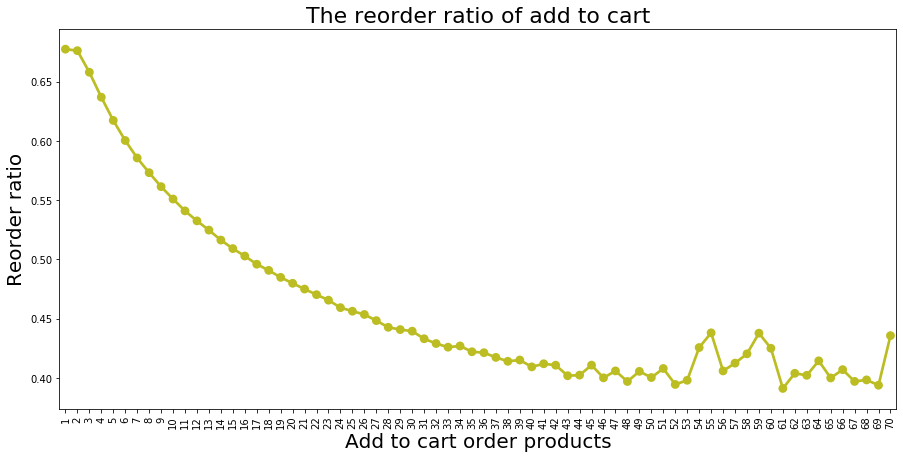
Products reorder ratio across the particular Day of a Week:
-
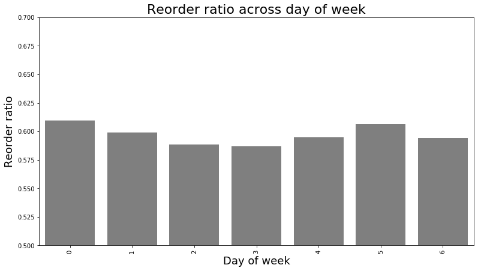
Products reorder ratio across Hour of a Day:
-
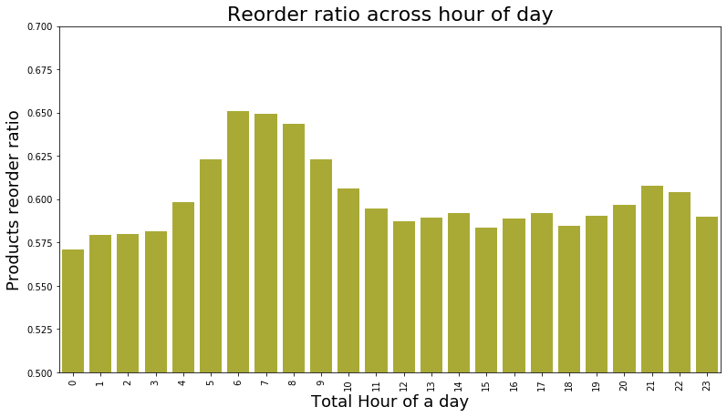
Reorder ratio of Products of Day of Week against Hour of Day:
-
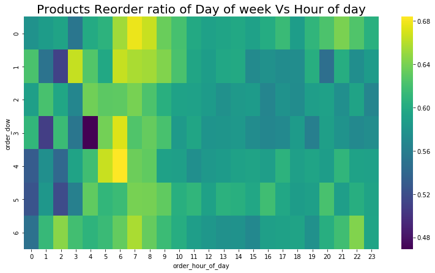